Home / Marinas
Marinas we service
Every marina, yacht club, and boat yard below is somewhere we regularly detail boats. We are independent and not affiliated with any of them. If yours is not here, call and ask.
Where we work, dock by dock.
Each page covers what that marina is like and what its water does to a boat kept there.
Stratford
Boat detailing in Stratford →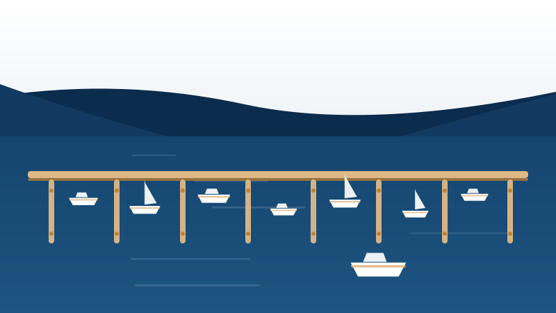
Full-service marinaBoardwalk Marina
165 floating slips on the Housatonic, about a half mile off I-95.
Housatonic River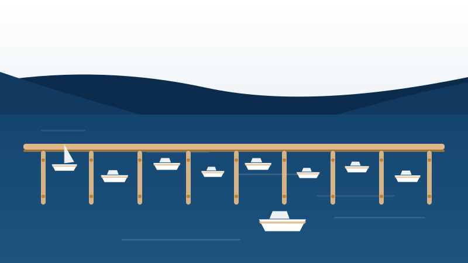
Full-service marinaSafe Harbor Stratford
About 1.5 miles up the Housatonic on a site with shipyards dating to the 1700s.
Housatonic River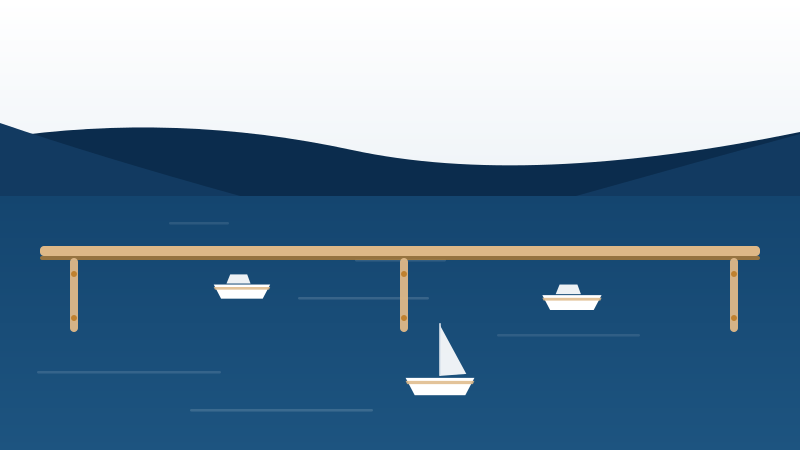
Marina and winter storageBrown's Marina
Seasonal slips and winter storage on the west bank, for vessels up to 50 feet.
Housatonic River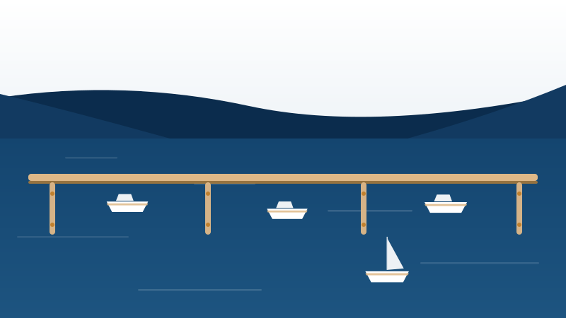
Private boat clubHousatonic Boat Club
A family boat club on the Housatonic, active in salt water recreation since 1887.
Housatonic RiverBridgeport
Boat detailing in Bridgeport →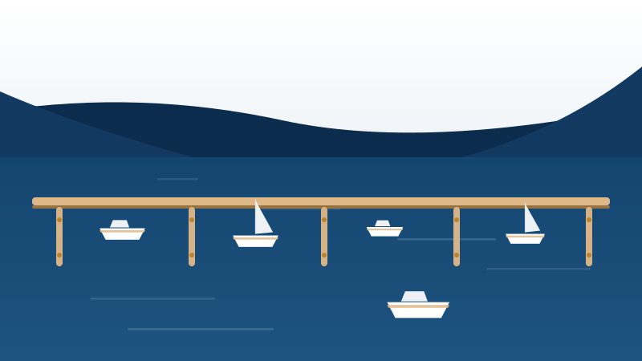
Family-owned full-service marinaCedar Marina
140 slips tucked into the left bank of Cedar Creek, family run since 1956.
Cedar Creek, Black Rock Harbor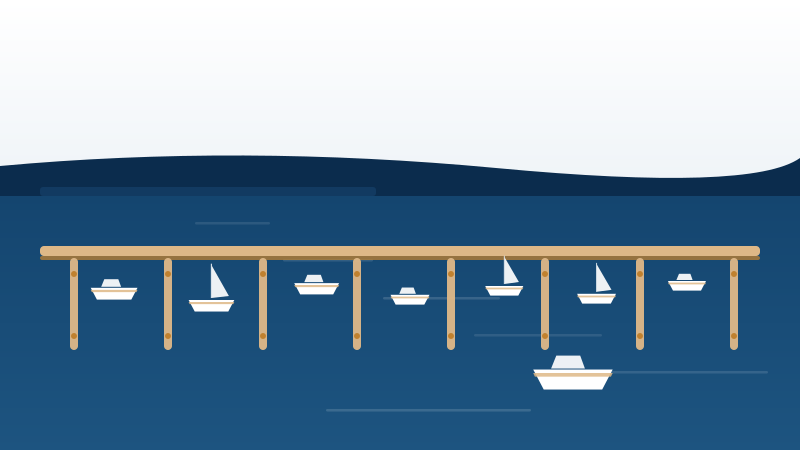
Full-service marina and seaportCaptain's Cove Seaport
A 350-slip seaport complex on Black Rock Harbor, taking boats up to 200 feet.
Black Rock HarborFairfield
Boat detailing in Fairfield →Westport
Boat detailing in Westport →New Haven
Boat detailing in New Haven →East Haven
Boat detailing in East Haven →Branford
Boat detailing in Branford →Safe Harbor Bruce & Johnson's
Over 500 slips on Goodsell Point Road, the largest marina we regularly service.
Branford River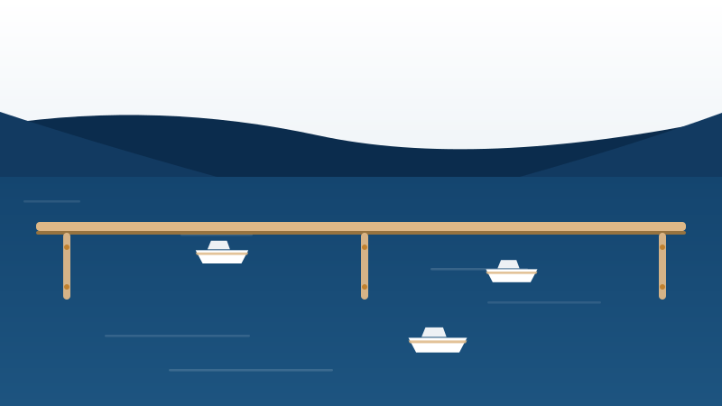
Full-service boat yardDutch Wharf Boat Yard & Marina
65 slips up the Branford River, with over 60 years of yard work behind it.
Branford River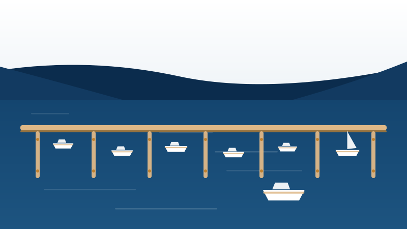
Member-owned yacht clubBranford Yacht Club
Founded 1909 near the mouth of the Branford River, with 257 moorings across two marinas.
Branford River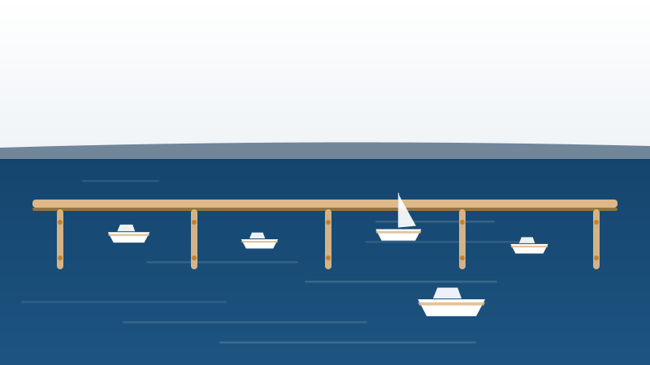
Private clubPine Orchard Yacht and Country Club
A private club founded in 1901, with a 100-slip marina on the Branford shoreline.
Branford shorelineGuilford
Boat detailing in Guilford →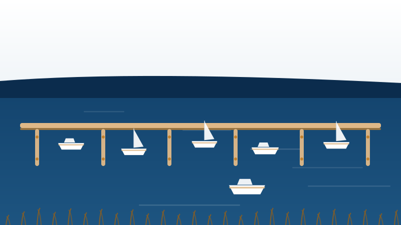
Yacht club and marinaGuilford Yacht Club
Founded 1954 among the salt marshes of the West River, taking boats up to 60 feet.
West River, Guilford Harbor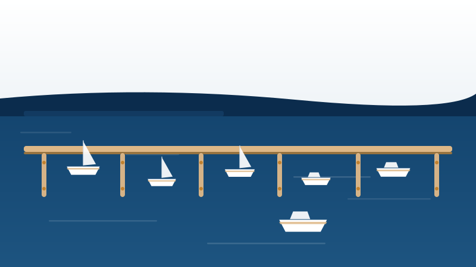
Town marinaGuilford Town Marina
The town's own marina on Whitfield Street, home port to local fishing and pleasure boats.
Guilford Harbor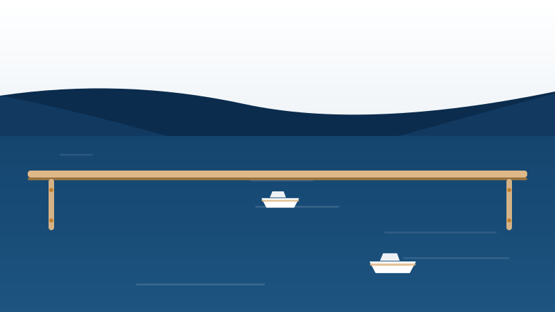
Boat yard and marinaBrown's Boat Yard
A 30-slip yard at the mouth of the West River, operating since the 1940s.
West River Yacht club with mooring fieldsSachem's Head Yacht Club
Founded 1896, with mooring fields in two harbors and launch service to members' boats.
Sachem's Head harborsWe travel further than this.
This list covers the marinas we visit most, not the limit of where we go. We also work at private docks, driveways, storage yards, and marinas beyond this list, both further east toward Mystic and west toward Stamford.
If you keep your boat somewhere that is not on this page, call and tell us where. If the job makes sense for both of us, we will come to you.